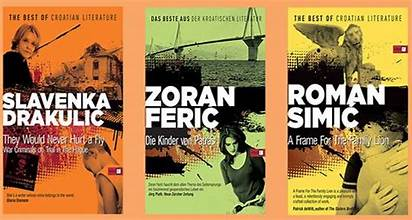
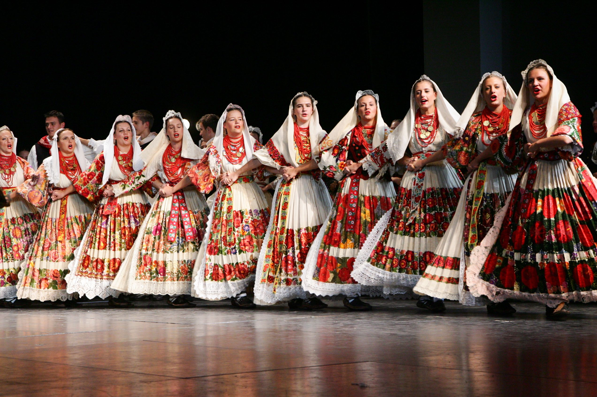
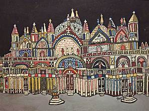
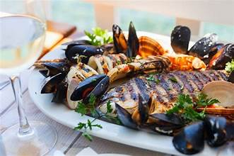
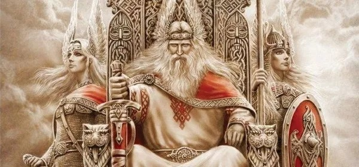
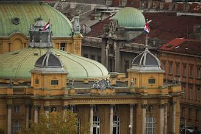
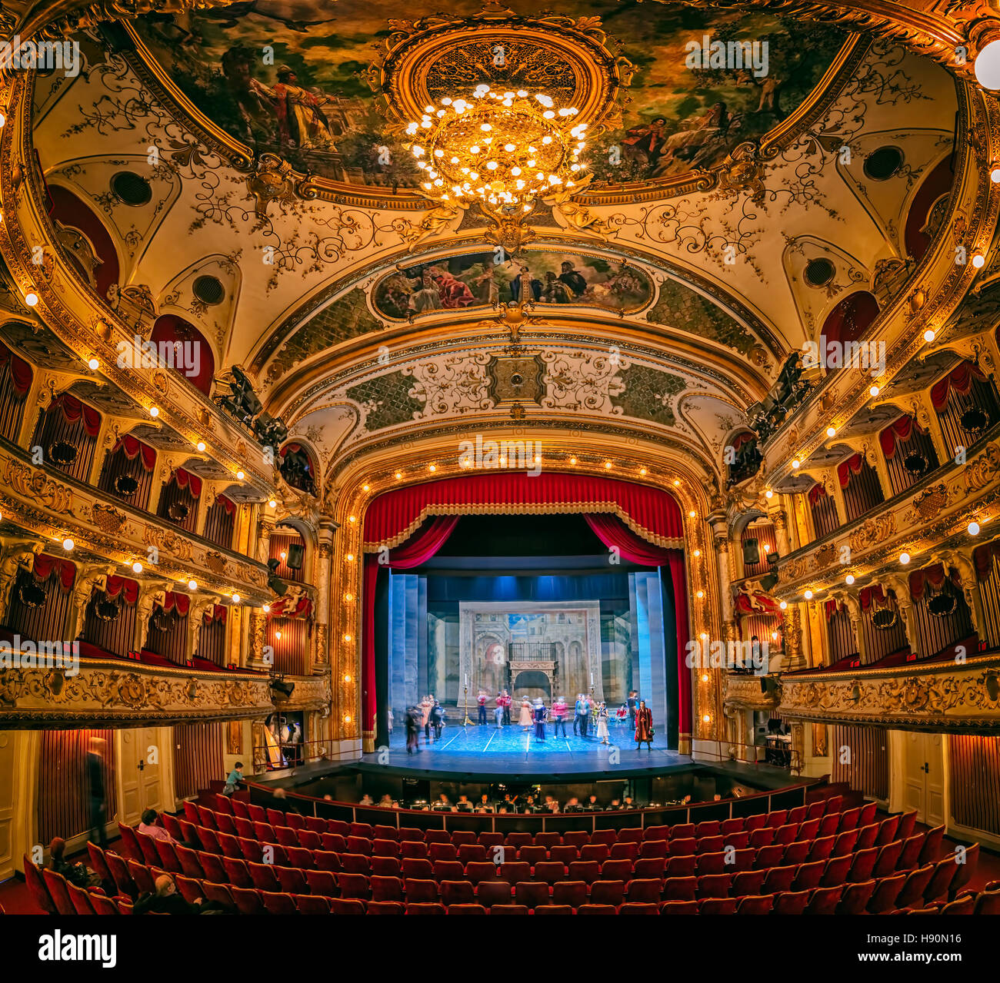
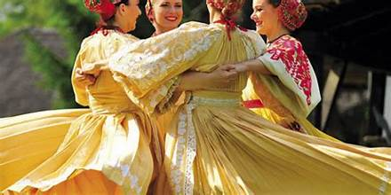

Literature: Stories That Illuminate Croatian Identity
Croatian literature reflects the nation's complex history and cultural heritage, with renowned writers like Ivan Gundulić, Miroslav Krleža, and Ivana Brlić-Mažuranić contributing to its rich tapestry. From epic poems and folk tales to modern novels and poetry, Croatian literature offers insights into the collective psyche and values of its people.

Music: Harmonies That Echo Through the Ages
Music holds a special place in Croatian culture, with a diverse range of traditional and contemporary genres that resonate with audiences both at home and abroad. From the haunting melodies of traditional klapa singing to the energetic rhythms of tamburica orchestras, Croatian music reflects the nation's spirit of resilience and celebration.

Art: Expressions of Beauty and Identity
Croatian art spans centuries, encompassing a variety of styles and influences from different periods of history. From medieval frescoes and Renaissance masterpieces to contemporary works by modern artists, Croatian art offers a window into the nation's cultural heritage and creative spirit.

Cuisine: A Gastronomic Journey Through Croatia
Croatian cuisine is a reflection of its diverse landscapes and culinary traditions, with each region boasting its own unique specialties and flavors. From seafood along the Adriatic coast to hearty stews and grilled meats in the continental interior, Croatian cuisine is a celebration of fresh, locally sourced ingredients and time-honored recipes.

Folklore: Tales That Bind Past and Present
Croatian folklore is a treasure trove of myths, legends, and folk traditions that have been passed down through generations. From ancient Slavic deities and mythical creatures to folk customs and rituals, Croatian folklore provides a glimpse into the nation's cultural heritage and collective imagination.

Architecture: Icons of Croatia's Built Heritage
Croatia's architectural heritage is a testament to its rich history and cultural diversity, with influences ranging from Roman and Byzantine to Venetian and Ottoman. From medieval castles and Renaissance palaces to Baroque churches and Art Nouveau buildings, Croatian architecture showcases the nation's unique blend of styles and influences.

Performing Arts: Theatrical Traditions and Modern Innovation
Croatia has a vibrant performing arts scene, with a rich tradition of theater, dance, and opera that dates back centuries. From traditional folk performances to avant-garde theater productions and contemporary dance, Croatian performing arts reflect the nation's cultural dynamism and creative spirit.

Festivals and Celebrations: Commemorating Cultural Heritage
Throughout the year, Croatia hosts a variety of festivals and celebrations that showcase its cultural heritage and traditions. From music festivals and film screenings to religious processions and folkloric events, these celebrations bring communities together and reaffirm the importance of cultural identity and unity.